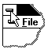

|
|
Use this command to end your Strawberry Prolog session. You can also
use the Close command on the application Control menu. Strawberry Prolog
prompts you to save documents with unsaved changes.
Shortcuts
Mouse: Double-click the application's Control menu button.

Keys: ALT+F4